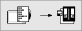
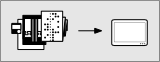

9.2. Transferring an NC program to the machine
When transferring an NC program to the machine, a check is made to see whether the data used in the NC program is identical to the data used in the machine.
NC program transfer
|

|
Transfer from PC to machine: Transfer the NC program from the PC to the controller's memory. In doing so, a check is made to see whether origins, tools and machine configurations match. The NC program can be run on the machine if
|
|

|
Open the File exchange dialog. The left side of the dialog displays the directory structure of the local PC and the right side of the dialog shows the directory structure of the machine computer. In the directory structure, move to the next higher level.
The currently selected folder (PC and machine computer) is displayed on the bottom line. A directory or path can also be entered here directly. Set as NC Dir: Specify the folder that is selected on the machine computer as the output directory for the generated NC program. Close: Close the File exchange dialog. |